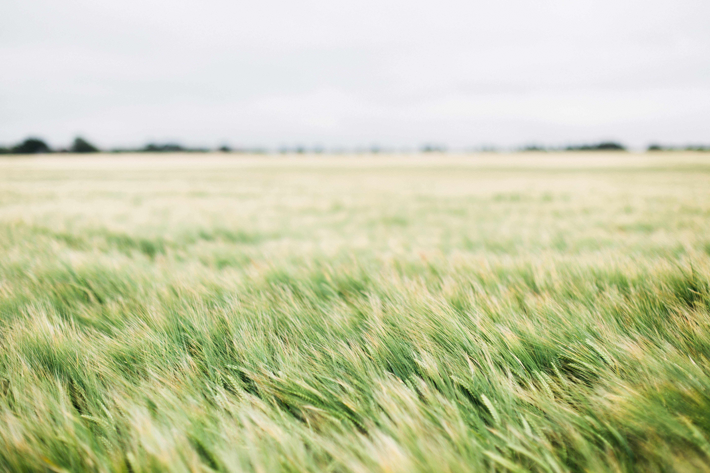
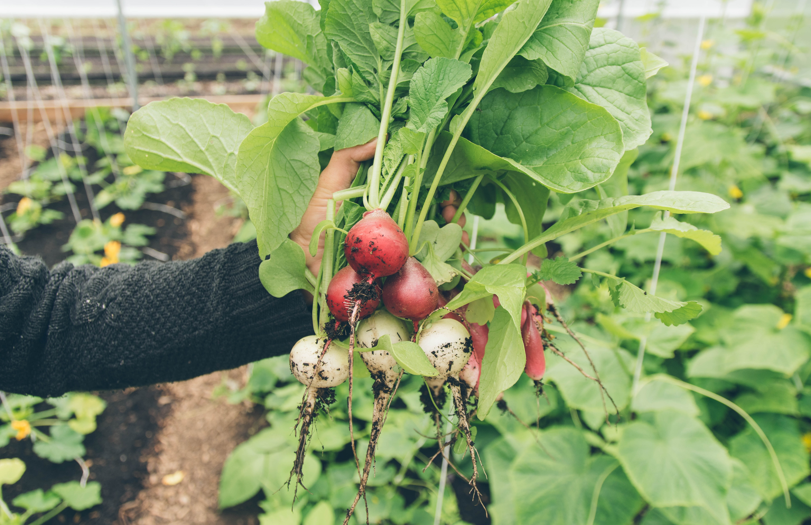
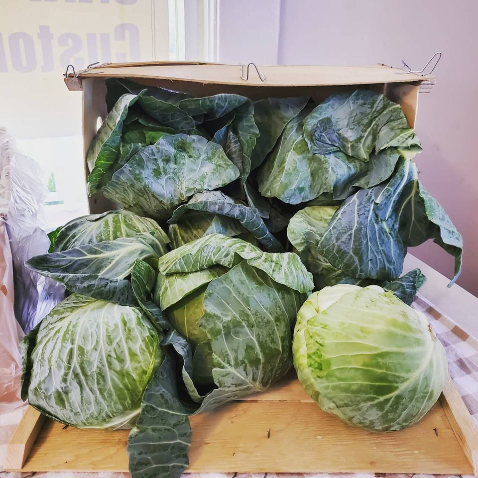
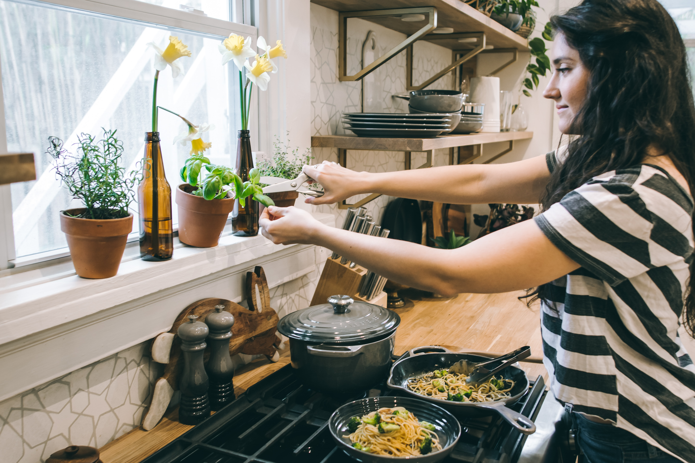

Design Challenge
The first step in the website redesign process was determining the design challenge. We used a worksheet from the Human Centered Design Toolkit created by IDEO to form an action-based question.


Audience & Goals
After significant research had been collected, overarching and primary goals were pinpointed, as well as the audiences to which those goals applied.
